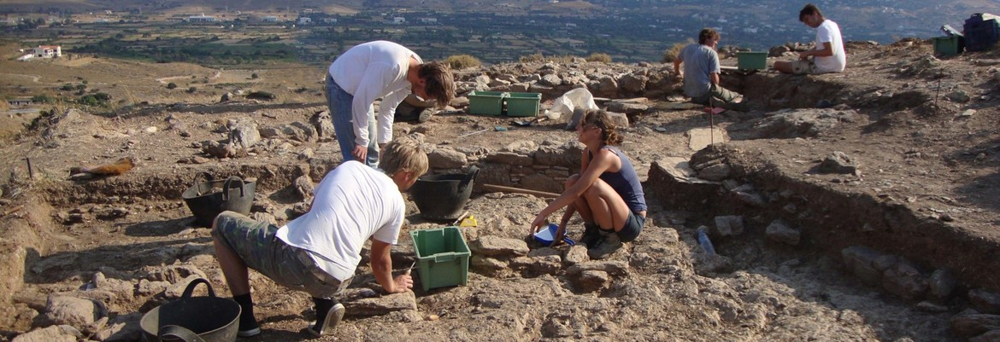
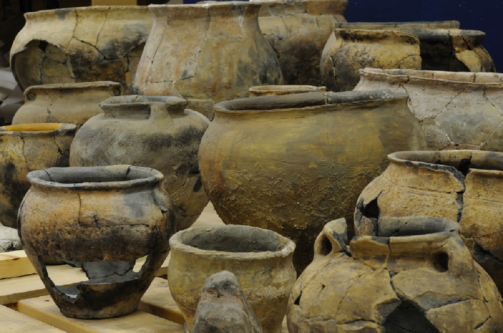

Geplaatst op 18 Januari 2019 door Malina
Lise hører på radioen Lise sitter hjemme i stua og hører på radioen. Hun liker å høre på jazz. Det finnes en egen radiokanal for jazz på radioen. Radiokanalen heter Jazzradio'n og er på frekvens FM 106.8.(hundreogseks.åtte) Lise hører på Jazzradio'n hver helg. Jazz får Lise til å slappe av.
Zoek en gij zult vinden
Kari drar til Frognerparken Kari våkner en morgen og det er strålende vær. Sola skinner, og det er veldig få skyer på himmelen. Kari bestemmer seg derfor for å dra til Frognerparken. Hun ringer Nina og spør om hun har lyst til å være med til Frognerparken. De bestemmer seg for å ta med pledd, engangsgrill, grillmat og drikke. De inviterer de andre vennene sine også. Dette kommer til å bli en flott dag tenker Kari.
Potten en pannen
Laatste berichten
Dieren in het nieuws